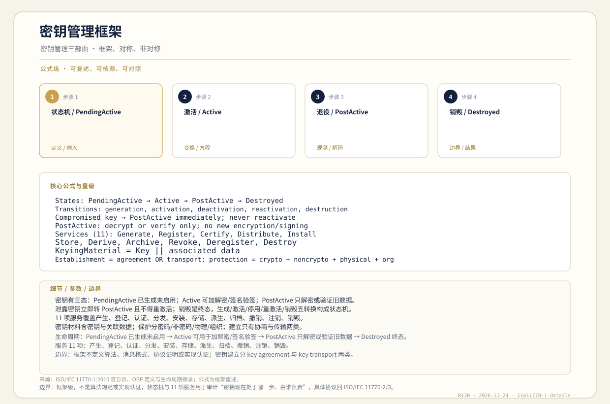
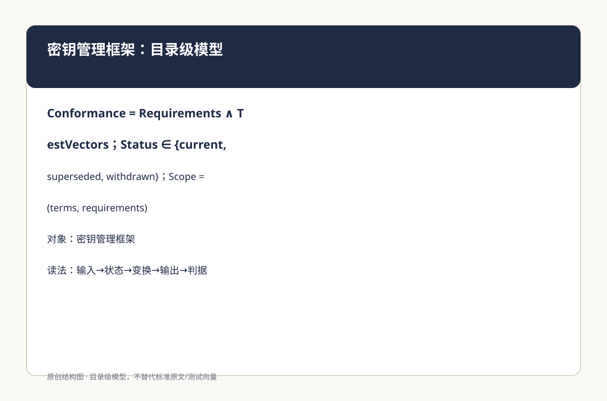

原理与机制
标准：密钥管理框架（Key management — Part 1: Framework）。ISO/IEC 11770-1:2010 的价值不在某个算法，而在把密钥当作有状态对象。标准把密钥生命周期归纳为三个主状态：PendingActive 已生成未启用；Active 可用于加密、解密、签名或验签；PostActive 只允许解密或验证此前处理的数据。状态间有 generation、activation、deactivation、reactivation、destruction 五个转换；密钥一旦确认泄露，必须立即进入 PostActive，且不得重新激活。框架列出 11 项服务：Generate-Key、Register-Key、Create-Key-Certificate、Distribute-Key、Install-Key、Store-Key、Derive-Key、Archive-Key、Revoke-Key、Deregister-Key、Destroy-Key。它们覆盖从产生到销毁的行政与技术动作，具体由安全策略决定哪些强制、哪些可选。密钥材料不只是密钥本身，还包括关联数据（如标识、有效期、用途、算法参数）；保护手段分密码、非密码、物理和组织四类。密钥建立则只有两条大路：key agreement（双方交换后共同计算，任何一方不能预先决定）与 key transport（一方选定密钥，用非对称技术保护后传给另一方）。公式化记法：K=(state, purpose, protection, custodian)。任何审计问题先问四个字段；缺一项，密钥管理链就断。

为什么重要
Part 1 是 Part 2/3 的上位框架：Part 2 的 KDC/KTC 机制、Part 3 的 agreement/transport 机制都引用这里的状态与服务定义。把 Part 1 误读成“算法标准”会导致两个错误：一是以为它规定密码算法；二是把密钥生命周期简化成“生成—使用—删除”三段，漏掉 PostActive 的只读约束。它也不规定 KDC 与 KTC 的实现细节。KDC 通常生成或取得密钥再分发；KTC 只转换或封装一方提供的密钥材料。两者信任模型不同：KDC 知道密钥，KTC 也可能看到或改写。框架只给角色与服务，不给协议消息。公式级的“可复述”是指能画出状态机、列出 11 项服务、说明四类保护与两类建立方式，而不是背算法。
应用与实例
工程审计按五步走：1) 给每把密钥标状态与用途；2) 查该状态允许的服务；3) 查保护手段是否覆盖存储、传输、使用；4) 查派生密钥是否经 KDF 并带上下文；5) 查撤销、注销、销毁是否有证据。典型映射：主密钥长期 Active 或 PostActive；会话密钥 Active 短周期；历史密钥 PostActive 只解密/验签；泄露密钥立即 PostActive，保留解密旧数据的能力但不参与新业务。归档密钥只能用于恢复旧数据，不能重新激活用于新加密。销毁要覆盖所有副本、备份、HSM 槽位与缓存；注销要从目录或注册表移除；撤销要发布状态并阻止新使用。

边界与攻击面
框架不定义算法、参数、消息格式、协议证明；它也不保证实现安全。三个主状态可以细分，但标准不强制子状态；PostActive 的“只解密/验签”不是建议而是约束。常见错误：泄露密钥重新激活；归档密钥当现役密钥；只删除主副本；把 KDC 与 KTC 混为一谈；把“已注册”当“已激活”；把密钥用途与算法绑定当成安全策略。它也不覆盖跨域密钥管理、密钥恢复的托管细节、硬件模块认证；这些要看 Part 2/3、Part 6 与 ISO/IEC 19790。
历史与背景
1996 年第一版建立框架；2010 年第二版技术修订，页数 30，2021 年复审确认，至今现行。Part 1 之后，Part 2 管对称机制，Part 3 管非对称机制，Part 4 弱秘密，Part 5 群组，Part 6 密钥派生，Part 7 跨域口令。
逐步示例与核验
形式模型与复算步骤
[S=\min_i S_i,\quad S_i\in{\text{密钥强度},\text{分组安全},\text{实现安全}}]
密钥管理框架的公开参数、密钥/随机数与消息；变量说明：S 为综合安全强度；各分量取最小值，不能只看密钥位数。1.读取标准规定的密钥/分组/模式参数。2.按标准表换算等效强度。3.取最弱分量作为系统强度。边界：公式只覆盖已登记的参数与假设；参数取值、标准版本和实现细节仍以来源为准。
参考出处
- Wikipedia search entry for 密钥管理框架. https://zh.wikipedia.org/w/index.php?search=%E5%AF%86%E9%92%A5%E7%AE%A1%E7%90%86%E6%A1%86%E6%9E%B6
- Handbook of Applied Cryptography (Menezes, van Oorschot, Vanstone). https://www.cacr.math.uwaterloo.ca/hac/